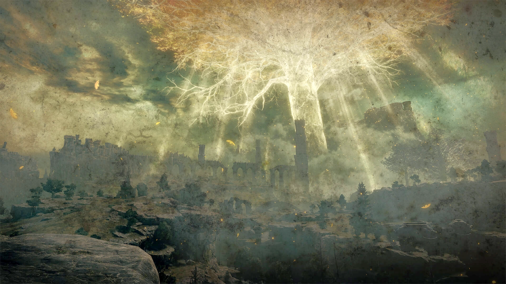
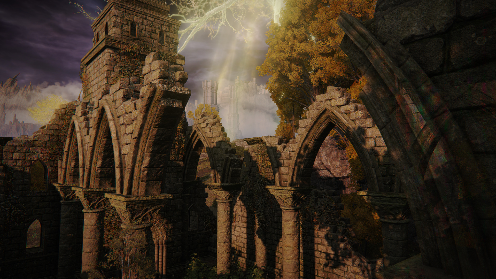
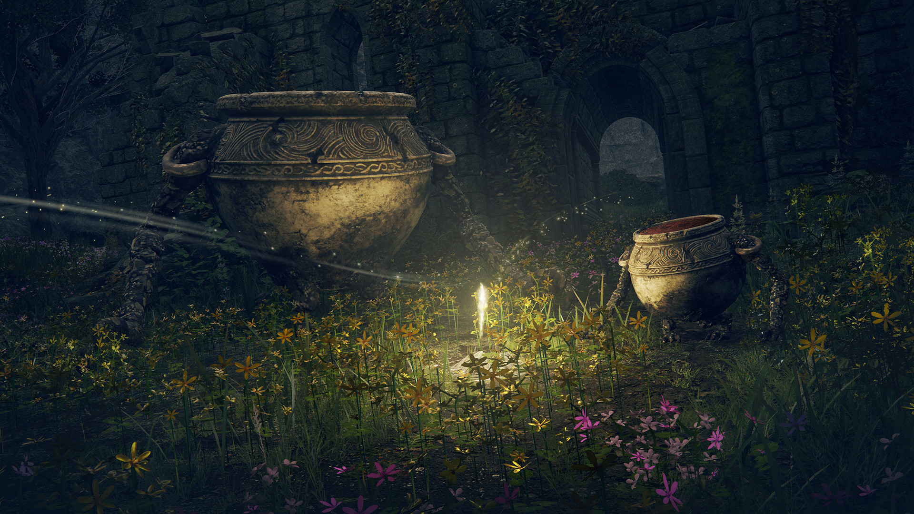
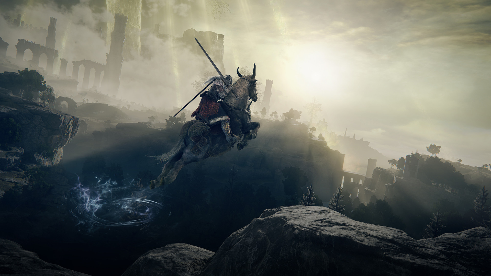
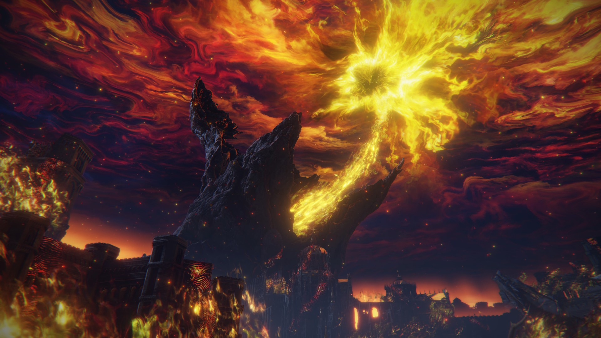

Um reino fragmentado pela Ruptura, onde o destino dos Maculados aguarda ser reescrito.

A majestosa Árvore Áurea ilumina as Terras Intermédias.

Vestígios de um reino esquecido sob a luz da Erdtree.

Um refúgio pacífico escondido entre flores e ruínas.

Um Maculado atravessa as vastas terras em busca do destino.

O momento apocalíptico da Chama Frenética na Erdtree, com o céu derretendo em um turbilhão de fogo dourado e caos.

O mistério cósmico que aguarda além das estrelas.